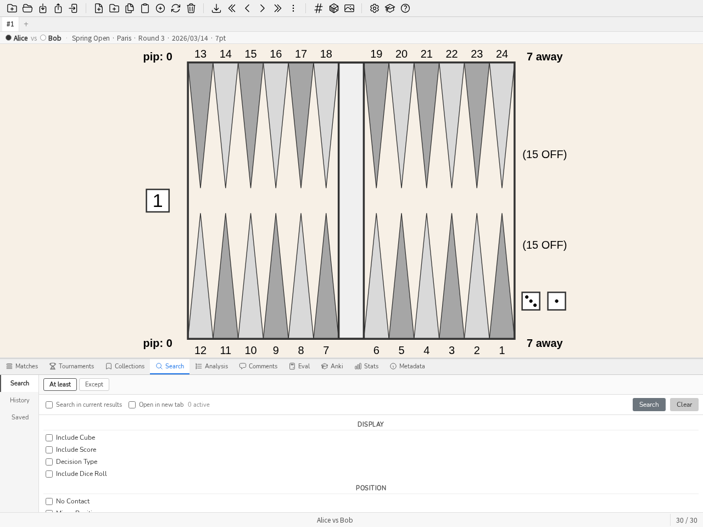
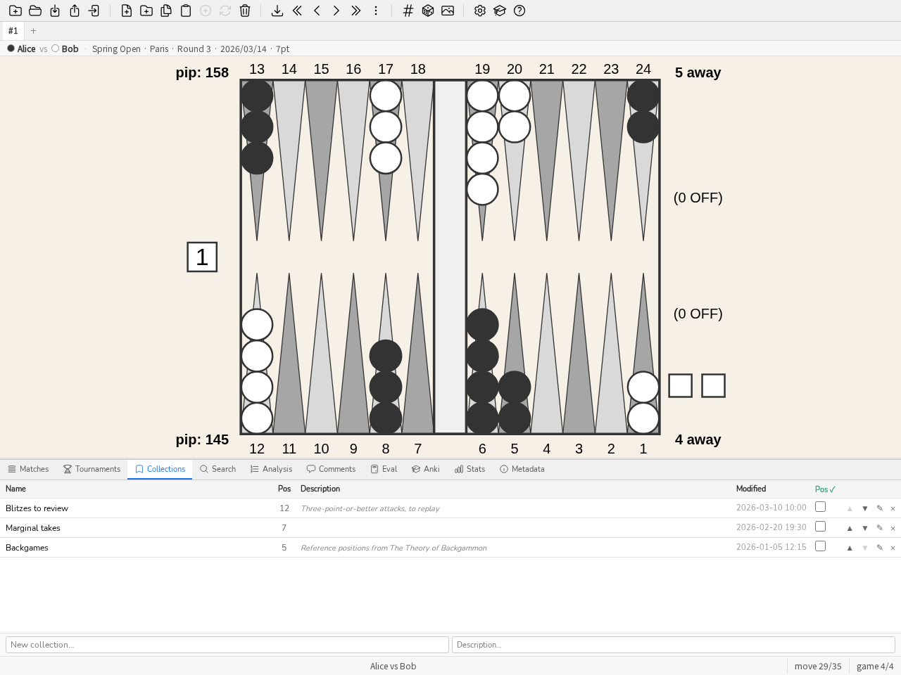

3. Manuale
3.1. Introduzione
blunderDB è un software per creare database di posizioni di backgammon. Il suo punto di forza principale è fornire un luogo unico in cui aggregare le posizioni che un giocatore ha incontrato (online, in torneo) e poterle riesaminare filtrandole secondo vari filtri combinabili arbitrariamente. blunderDB può anche essere usato per creare cataloghi di posizioni di riferimento.
Le posizioni sono memorizzate in un database rappresentato da un file .db.
3.2. Interazioni principali
Le principali interazioni possibili con blunderDB sono:
aggiungere una nuova posizione,
modificare una posizione esistente,
copiare l’immagine del board negli appunti (PNG) tramite CTRL-X, oppure con l’analisi completa tramite CTRL-X CTRL-X,
eliminare una posizione esistente,
cercare una o più posizioni,
importare match da diverse fonti (XG, GNUbg, BGBlitz, Jellyfish), compresi i commenti dai file XG,
navigare tra le mosse di un match importato,
organizzare le posizioni in raccolte,
organizzare i match in tornei.
L’utente può etichettare liberamente le posizioni con tag e annotarle tramite commenti.
3.3. Descrizione dell’interfaccia
L’interfaccia di blunderDB è composta, dall’alto verso il basso, da:
[in alto] la barra degli strumenti, che raccoglie tutte le principali operazioni eseguibili sul database,
[al centro] l’area di visualizzazione principale, che permette di visualizzare o modificare posizioni di backgammon,
[in basso] la barra di stato, che presenta diverse informazioni sul database o sulla posizione corrente e integra la riga di comando.
Possono essere visualizzati dei pannelli per:
visualizzare i dati di analisi associati alla posizione corrente provenienti da eXtreme Gammon (XG), GNUbg o BGBlitz,
visualizzare, aggiungere o modificare commenti,
cercare e filtrare posizioni secondo criteri combinabili,
visualizzare e gestire le raccolte di posizioni (pannello raccolte),
visualizzare l’elenco dei match importati e navigare tra le mosse di un match (pannello match),
visualizzare e gestire i tornei (pannello tornei),
visualizzare le statistiche di performance (pannello Stats),
calcolare l’EPC (Effective Pip Count) di una posizione di bearoff (pannello Eval),
studiare le posizioni tramite ripetizione dilazionata (pannello Anki),
visualizzare i metadati del database (pannello Metadati).
Possono comparire finestre modali per:
visualizzare la guida di blunderDB,
visualizzare il catalogo delle visite guidate (vedi Visite guidate e database di esempio),
configurare le impostazioni di esportazione del database,
configurare blunderDB, in particolare la lingua dell’interfaccia (vedi Configurazione).
L’area di visualizzazione principale mette a disposizione dell’utente:
un board per visualizzare o modificare una posizione di backgammon,
il livello e il proprietario del cubo,
il pip count di ciascun giocatore,
il punteggio di ciascun giocatore,
i dadi da giocare. Se sui dadi non è mostrato alcun valore, la posizione dei dadi indica quale giocatore ha il turno e che la posizione è una decisione di cubo. Quando la decisione di cubo è una risposta a un raddoppio (prendi/passa), il cubo proposto è mostrato al centro del board, al valore offerto.
La barra di stato è strutturata da sinistra a destra con le seguenti informazioni:
la riga di comando, accessibile premendo il tasto SPAZIO,
un messaggio informativo relativo a un’operazione eseguita dall’utente,
l’indice della posizione corrente, seguito dal numero di posizioni nella libreria corrente (oppure le informazioni di mossa/partita durante la navigazione in un match).
Nota
Nel caso di posizioni derivanti da una ricerca dell’utente, il numero di posizioni indicato nella barra di stato corrisponde al numero di posizioni filtrate.
3.4. Schede delle viste
Sotto la barra degli strumenti, una barra delle schede consente di lavorare con più viste in parallelo. Ogni vista è uno spazio di lavoro indipendente che conserva il proprio elenco di posizioni, l’indice della posizione corrente, la posizione visualizzata, l’analisi e la mossa selezionata, il pannello attivo, il commento in corso nonché il contesto di navigazione in un match. È così possibile, ad esempio, tenere aperta una ricerca in una vista mentre si scorre un match in un’altra.
Creare una vista : fare clic sul pulsante + della barra delle schede o premere CTRL-T. La nuova vista parte come copia della vista corrente.
Chiudere una vista : fare clic sulla croce della scheda o premere CTRL-W. L’ultima vista non può essere chiusa.
Cambiare vista : fare clic su una scheda, premere CTRL-PageUp / CTRL-PageDown (o MAIUSC-J / MAIUSC-K) per passare alla vista precedente / successiva, oppure da CTRL-1 a CTRL-9 per raggiungere direttamente l’n-esima vista.
Rinominare una vista : fare doppio clic sulla scheda, inserire il nuovo nome e confermare con INVIO.
Le viste vengono salvate con lo stato di sessione del database e ripristinate alla sua riapertura.
3.5. Configurazione
Il pulsante di configurazione (icona a ingranaggio) nella barra degli strumenti, a sinistra del pulsante di aiuto, apre la finestra di configurazione di blunderDB. È organizzata in cinque schede:
Interfaccia — lingua, scala di visualizzazione, posizione del pannello;
Colori della board — i colori della board;
Bearoff — il database di uscita two-sided esteso usato dal pannello Bearoff;
gammonNet — le impostazioni del valutatore integrato, descritte qui sotto;
Identità dell’emittente — la chiave che firma i tuoi contrassegni di origine, descritta nella sezione Distribuire un database: origine e password.
La scheda Interfaccia permette di scegliere la lingua tra inglese, francese, tedesco, italiano, spagnolo, finlandese, giapponese, greco e russo. L’intera interfaccia (barra degli strumenti, pannelli, messaggi, aiuto) viene tradotta nella lingua selezionata. La scelta della lingua viene salvata e mantenuta da una sessione all’altra.
La stessa scheda offre anche il pulsante Compatta il database, che recupera lo spazio su disco lasciato dalle eliminazioni (match, tornei, purghe): il database non si riduce mai da solo quando si cancellano dati, questa compattazione va chiesta esplicitamente. L’operazione può richiedere tempo su un database grande e necessita, temporaneamente, di circa il doppio della sua dimensione in spazio libero (blunderDB rifiuta di partire anziché rischiare una compattazione interrotta); prima di avviarla viene quindi chiesta una conferma. Il risultato — lo spazio guadagnato, in megabyte — appare poi nella barra di stato. La stessa operazione è disponibile da riga di comando con blunderdb vacuum (vedere Interfaccia a riga di comando (CLI)).
Il pulsante Apri la cartella dei registri, subito sotto, apre la cartella che contiene il registro dell’applicazione — utile per allegare dettagli a una segnalazione di problema, in particolare quando blunderDB è stato avviato da un collegamento o da un doppio clic, senza un terminale collegato che mostri alcunché.
La casella Verificare gli aggiornamenti all’avvio, disattivata per impostazione predefinita, interroga una volta per avvio la pagina delle versioni del repository GitHub e mostra nella barra di stato un messaggio se è disponibile una versione più recente — mai una finestra che blocchi l’uso. Questa verifica resta automaticamente disattivata su un’installazione fatta tramite un gestore di pacchetti (Flatpak, Homebrew, un pacchetto della distribuzione…): in quel caso è quel canale a gestire gli aggiornamenti, non blunderDB.
La scheda Colori della board permette di personalizzare i colori della board. Ogni elemento dispone di un proprio selettore di colore: lo sfondo, il bordo, le punte chiare e scure, le pedine del giocatore 1 e del giocatore 2, i dadi, i punti dei dadi e il cubo. Il pulsante Reimposta ripristina tutti i colori predefiniti. Come la lingua, i colori scelti vengono mantenuti da una sessione all’altra.
La scheda Bearoff gestisce le tabelle di bearoff del pannello Eval (vedi Pannello Eval). Non sono né incorporate nell’eseguibile né scaricate: blunderDB le calcola sulla macchina che le usa, e il risultato è identico byte per byte a ciò che produce gnubg — l’impronta SHA-256 è verificata prima che una tabella venga accettata.
Le due tabelle ordinarie (TS-06-06 per il verdetto di cubo, OS-06 per l’EPC) sono calcolate al primo avvio, in secondo piano e senza chiedere nulla: circa sei secondi su un core, durante i quali l’applicazione si usa normalmente. Il pannello Eval lo segnala solo se vi si pone una posizione che ha bisogno di una tabella non ancora pronta.
La scheda mostra il dominio attivo e la sua origine, lo stato della tabella a un lato che legge l’EPC, la cartella dove tutto questo vive, e l’elenco delle tabelle presenti con la loro dimensione e il loro verdetto. Ogni riga si elimina singolarmente, dopo conferma.
Verificata o non verificata. Una tabella verificata ha esattamente i byte che gnubg produce per il suo dominio: la sua impronta SHA-256 figura in blunderDB ed è stata ritrovata. Una tabella non verificata è ben formata ma il suo dominio non ha impronta registrata — non le si rimprovera nulla, semplicemente nessuno l’ha confrontata con il riferimento. Una tabella corrotta si contraddice da sé e non viene mai letta; viene ricalcolata.
Calcolare una tabella più ampia. Il dominio si sceglie in un elenco di due famiglie, con il numero di core da dedicarvi (per impostazione predefinita tutti tranne uno, perché la macchina resti utilizzabile):
cubo esatto (due lati), da TS-06-06 a TS-06-15: amplia il dominio in cui la probabilità di vittoria e il verdetto del cubo sono letti anziché stimati;
EPC fuori dalla casa (un lato), da OS-06 a OS-10: amplia la distanza a cui una pedina può trovarsi senza che il blocco EPC taccia. Questo passaggio legge solo posizioni più piccole di quella che calcola, quindi è sequenziale per costruzione e il numero di core non gli serve — il selettore lo dice ingrigendosi.
Prima di lanciare qualsiasi cosa, la scheda dichiara tre cifre per il dominio scelto: la dimensione su disco, la memoria necessaria durante il calcolo e il tempo che dovrebbe volerci su questa macchina. Quest’ultimo comincia come stima e diventa una misura: ogni calcolo abbastanza ampio rileva la propria velocità e la conserva. Un dominio che la memoria disponibile non permette è proposto in grigio, con la ragione — « servirebbero 24 GB, ne restano 12 » è una risposta, una riga assente non lo sarebbe.
Come ordine di grandezza, su una macchina a sedici thread: TS-06-09 pesa 191 MB e richiede una decina di secondi, TS-06-11 pesa 1,2 GB e qualche minuto, TS-06-13 supera ciò che la maggior parte delle macchine può tenere in memoria. Dal lato a un lato, su un core: OS-07 pesa 4,9 MB e richiede 17 s, OS-08 15 MB e 1 min 20, OS-10 117 MB e mezz’ora.
Pausa e ripresa. Durante il calcolo, l’avanzamento mostra il tempo rimanente misurato e due pulsanti distinti: Pausa e Annulla. La pausa scrive lo stato del calcolo accanto alla tabella; rilanciarlo riprende da dove si era fermato invece di ricominciare. Annullare non conserva nulla. Chiudere la finestra di configurazione non interrompe niente — il calcolo prosegue in secondo piano.
Un calcolo messo in pausa si ritrova all’avvio successivo, nominato e quantificato («TS-06-09 interrotta al 43 %»), con Riprendi ed Elimina. Nulla riparte da solo: è l’utente ad aver chiesto l’arresto.
La scheda permette infine di puntare a un file .bd a due lati esterno, per esempio una base prodotta da gnubg stesso: vince la tabella dal dominio più ampio.
La scheda gammonNet regola il valutatore integrato (vedere ADR-0011). Vi si regolano due profondità di ricerca, denominate e conservate separatamente — abbassare l’una non modifica mai l’altra:
Profondità di visualizzazione — il comfort interattivo durante la modifica del tavoliere; mai scritta nel database.
Profondità di analisi — ciò che il lotto di analisi dopo l’importazione scrive nell’Analisi di una posizione.
Entrambe valgono per impostazione predefinita 2-ply, la configurazione canonica. La scheda propone anche la potatura (predefinita k=12) e il numero di mosse candidate mostrate (predefinito 10), oltre a una casella analizza automaticamente dopo l’importazione che, una volta attivata, verifica dopo ogni importazione se restano posizioni senza alcuna analisi (né gammonNet, né XG, né GNUbg, né BGBlitz — la regola è « una valutazione colma soltanto una lacuna », mai una sostituzione) e, se è il caso, avvia in background un’analisi gammonNet alla profondità di analisi configurata. Un pulsante Analizza ora riavvia manualmente lo stesso recupero, utile per una libreria creata prima dell’esistenza di questa funzione.
Un secondo pulsante, Rianalizza le posizioni obsolete, copre il caso opposto: una posizione già analizzata da gammonNet, ma la cui analisi memorizzata è stata scritta con una versione del motore più vecchia di quella attualmente in esecuzione, o a una profondità diversa dalla profondità di analisi configurata sopra, viene lì segnalata come obsoleta e rivalutata. Una posizione che porta anche un’analisi XG, GNUbg o BGBlitz non viene mai toccata da questo pulsante, qualunque sia il suo contenuto gammonNet — la protezione di ADR-0013 resta incondizionata. Il numero mostrato accanto a ciascun pulsante (posizioni senza analisi, posizioni obsolete) è puramente informativo; il lotto ricalcola il proprio elenco all’avvio.
Entrambi i lotti sono limitati, visibili e annullabili, mai un demone silenzioso: il loro avanzamento (posizioni analizzate / totale) e un pulsante di annullamento compaiono nella barra di stato per tutta la loro durata, e scompaiono una volta terminati a favore di un messaggio che riassume il risultato — quante posizioni sono state analizzate, quante sono state rifiutate (una posizione che gammonNet rifiuta di valutare, come un punteggio di partita fuori dalla portata della sua tabella, il che non è mai un guasto) e quante sono fallite (ritentate, invariate, alla prossima esecuzione). Chiudere l’applicazione durante l’uno o l’altro non perde nulla: ogni posizione analizzata viene scritta man mano, e la prossima esecuzione riprende esattamente da dove l’analisi si era fermata, senza alcun registro da tenere.
La finestra di configurazione raggruppa anche alcune impostazioni di visualizzazione dell’interfaccia. Un cursore di scala dell’interfaccia consente di ingrandire o ridurre l’insieme degli elementi, il che è utile sugli schermi ad alta densità o per migliorare la leggibilità. Un menu posizione dei pannelli determina la collocazione dei pannelli (ricerca, match, analisi) rispetto al tavoliere: in basso, di lato o automatica (il lato viene allora scelto sugli schermi larghi per sfruttare meglio lo spazio disponibile). Come le altre impostazioni, queste scelte vengono conservate da una sessione all’altra.
3.6. Visite guidate e database di esempio
Per facilitare i primi passi, blunderDB propone delle visite guidate dell’interfaccia. Il catalogo delle visite si apre dalla barra degli strumenti o con il comando tour (alias tutorial). Sono disponibili sette visite: una visita generale dell’interfaccia e visite dedicate alla ricerca di posizioni, alla revisione delle partite, alla revisione dei tornei, al pannello Eval, al ripasso Anki e alle statistiche. Ogni visita evidenzia gli elementi interessati dell’interfaccia, passo dopo passo, apre il pannello di cui parla, e può essere ripetuta in qualsiasi momento. Al primo avvio, la visita generale viene proposta automaticamente.
Il comando demo carica un database di esempio che permette di scoprire le funzionalità dello strumento senza importare le proprie partite: tre partite (due delle quali raggruppate in un torneo) analizzate da eXtreme Gammon, BGBlitz e gammonNet, tre raccolte tematiche, commenti con etichette (#blunder, #cube) e un mazzo Anki con il suo registro dei ripassi. Giocatori, torneo e luogo sono fittizi. Le visite guidate si basano su questo database quando nessun database è aperto.
3.8. Modifica delle posizioni
La pressione del tasto TAB apre il pannello di ricerca e permette di modificare una posizione sul board per aggiungerla al database o per definire una struttura di posizione da cercare. La distribuzione delle pedine, il cubo, il punteggio e il turno possono essere modificati con il mouse (vedi Modificare una posizione).
Suggerimento
Fare riferimento a Scorciatoie da tastiera per le scorciatoie disponibili.
3.9. La riga di comando
La riga di comando, integrata nella barra di stato, permette di eseguire tutte le funzionalità di blunderDB disponibili nell’interfaccia grafica: operazioni generali sul database, navigazione delle posizioni, visualizzazione dell’analisi e/o dei commenti, ricerca di posizioni secondo filtri… Dopo aver preso confidenza con l’interfaccia, si raccomanda di utilizzare progressivamente la riga di comando, che consente un uso potente e fluido di blunderDB, in particolare per le funzionalità di ricerca delle posizioni.
Per aprire la riga di comando, premere il tasto SPAZIO. Per inviare una richiesta e chiudere la riga di comando, premere il tasto INVIO.
blunderDB esegue le richieste inviate dall’utente a condizione che siano valide e modifica immediatamente lo stato del database se necessario. Non sono richieste azioni di salvataggio esplicite da parte dell’utente.
Suggerimento
Fare riferimento a Sezione 4 per l’elenco dei comandi disponibili nella riga di comando.
3.10. Pannello Analisi
Il pannello Analisi (CTRL-L) visualizza i dati di analisi della posizione corrente importati da eXtreme Gammon (XG), GNUbg o BGBlitz. Mostra le migliori alternative (mosse di pedine o decisioni di cubo) con i relativi valori di equity e gli errori corrispondenti. Il tasto d alterna tra l’analisi delle mosse di pedine e l’analisi del cubo. Durante la navigazione in un match, la mossa effettivamente giocata viene evidenziata nell’elenco delle alternative. Premere CTRL-L o eseguire il comando list per mostrare o nascondere il pannello.
Le mosse sono scritte come si leggono sul tavoliere, qui come nel pannello Eval: la pedina meno avanzata si muove per prima, e una pedina che concatena più dadi si scrive una sola volta — un 64 giocato con la stessa pedina si legge 24/14, e 24/14* se colpisce all’arrivo. Il dettaglio della concatenazione ricompare solo quando dice qualcosa in più: un colpo lungo il percorso conserva il suo punto di passaggio, 24/18* 18/14, senza il quale il colpo sul 18 sparirebbe dalla notazione.
L’equità di un’analisi importata segue la stessa regola del pannello Eval: la colonna indica il proprio referenziale, «Equity (money)» o «Equity (match)» a seconda del punteggio della posizione analizzata, mai un semplice «Equity» muto sulla scala. Le regole Jacoby e Beaver attive su una posizione money game vengono mostrate anch’esse, in badge sotto la tabella di decisione del cubo.
3.11. Pannello Commenti
Il pannello Commenti (CTRL-P) visualizza, aggiunge e modifica i commenti associati alla posizione corrente. I commenti importati dai file XG vengono automaticamente associati alle posizioni corrispondenti. Premere CTRL-P o eseguire il comando comment per mostrare o nascondere il pannello.
3.12. Pannello Ricerca
Il pannello Ricerca (CTRL-F o TAB) permette di filtrare le posizioni secondo criteri liberamente combinabili: struttura delle pedine, tipo di decisione di cubo, magnitudo dell’errore, date, tag, ecc. Il tasto TAB apre contemporaneamente il pannello di ricerca e l’editor di posizione, consentendo di definire una struttura di pedine da cercare direttamente sul board.
{kind=link}

Il pannello Ricerca: filtri numerici, struttura di pedine sul tabellone, schede At least / Except.
Per affinare una ricerca tra le posizioni attualmente filtrate, usare il comando ss seguito da filtri (es.: ss nc, ss E>40). Il pannello di ricerca offre anche una casella di spunta Search in current results per la stessa funzionalità.
Il pannello offre un controllo esplicito del tipo di decisione ricercato: Indifferente (nessun filtro), Pedine (decisioni di mossa) o Cubo (decisioni di cubo). Quando è selezionato Cubo, un secondo elenco precisa il sotto-tipo: Tutti, Raddoppio / No raddoppio (il giocatore di turno deve decidere se raddoppiare) o Accetta / Passa (risposta a un raddoppio avversario). Il controllo è sincronizzato con il board: modificare i dadi o il cubo sul board aggiorna il tipo di decisione, e viceversa. In modalità Accetta / Passa, il cubo è mostrato al centro del board al valore offerto; tale valore resta modificabile.
Il filtro Contrassegnata conserva le posizioni che avete contrassegnato nel software di origine della partita. Solo eXtreme Gammon produce questa informazione, registrata mossa per mossa nel file .xg; blunderDB la legge all’importazione e la conserva. Una decisione di cubo contrassegnata dà due posizioni contrassegnate, il raddoppio e l’accetta/passa, poiché blunderDB divide in due ciò che il file di origine registra come una sola decisione.
Nota
La marcatura non è retroattiva: le partite già presenti nel database non contengono questa informazione, poiché esiste solo nei file di origine. È sufficiente reimportare il file .xg interessato — l’importazione rileva il duplicato e non aggiunge altro che i contrassegni, senza toccare i commenti né le analisi esistenti. Il contrassegno non può essere né posto né rimosso da blunderDB: per un elenco di lavoro temporaneo, utilizzate piuttosto una collezione.
Il filtro Commento interroga i commenti associati alle posizioni secondo tre modalità esclusive. contiene il testo cerca una o più parole nel testo dei commenti (campo di immissione, parole separate da ;, almeno una deve corrispondere); ha un commento conserva ogni posizione che porti un commento, qualunque sia il suo contenuto; senza commento conserva al contrario le posizioni non annotate — utile, combinato con un filtro di errore o di data, per stilare l’elenco di ciò che resta da commentare.
Nota
I commenti importati da un file di partita (XG, GNUbg) contano come commenti: blunderDB non conserva la loro origine e non può quindi distinguere una nota da voi inserita da una nota ripresa dal file di origine. Inoltre, i commenti associati a una partita o a un torneo non sono interessati: annotano la partita o il torneo, non le sue posizioni.
Il filtro Match & Tornei si basa su un selettore comune (finestra modale) anziché sull’inserimento di identificativi numerici: due elenchi con caselle di spunta, uno per i match e uno per i tornei, ciascuno filtrabile per testo (giocatore, data, evento per i match; nome, data, luogo per i tornei), con pulsanti Tutti / Nessuno che agiscono solo sul sottoinsieme attualmente filtrato. Selezionare un torneo seleziona automaticamente (e disabilita, mostrandoli in grigio) i match che ne fanno parte nell’elenco dei match, rendendo visibile il fatto che un torneo equivale all’insieme dei suoi match.
Il pannello di ricerca presenta tre schede sul bordo sinistro: Ricerca (i filtri), Cronologia e Salvati. La scheda Cronologia elenca le ricerche passate con la loro data e il loro comando: un clic seleziona una ricerca e mostra la posizione associata sul tavoliere, un doppio clic la riesegue. Ogni voce può essere salvata nella libreria di filtri (icona segnalibro, assegnando un nome al filtro) o eliminata. La scheda Salvati contiene la libreria di filtri : fare doppio clic su un filtro salvato per rilanciare la ricerca corrispondente (vedere Appendice: Utilizzo avanzato dei filtri). Il comando history (alias hi) apre il pannello di ricerca.
Suggerimento
Fare riferimento a Sezione 4 per l’elenco dei filtri disponibili.
3.13. Pannello Raccolte
{kind=link}

Il pannello Collezioni: nome, numero di posizioni, descrizione, ultima modifica.
Il pannello Collezioni (CTRL-B) consente di gestire collezioni di posizioni. Le collezioni possono essere create, rinominate ed eliminate. Vi si possono aggiungere o togliere posizioni (tasto Canc, viene chiesta conferma). Fare doppio clic su una collezione per scorrerne le posizioni con i tasti SINISTRA e DESTRA. L’ordine delle collezioni e delle posizioni all’interno di una collezione può essere modificato per trascinamento. Premere CTRL-B o eseguire il comando collection per mostrare o nascondere il pannello.
3.14. Pannello Match
Il pannello Match (CTRL-Tab) elenca i match importati. Fare doppio clic su un match (o premere INVIO) per navigare tra le sue mosse. Il comando m riprende la navigazione nell’ultimo match visitato.
L’utente può:
scorrere le mosse di un match usando i tasti SINISTRA e DESTRA,
passare da una partita all’altra con i tasti PageUp e PageDown,
visualizzare l’analisi delle mosse (pedine e cubo) premendo CTRL-L,
alternare tra l’analisi delle mosse di pedine e quella del cubo con il tasto d,
vedere la mossa effettivamente giocata evidenziata nell’analisi.
L’ultima posizione visitata in ciascun match viene memorizzata e ripristinata automaticamente. Premere CTRL-Tab o eseguire il comando match per mostrare o nascondere il pannello.
Ogni match può essere esportato in trascrizione Jellyfish .mat tramite il pulsante ⬇ dell’elenco dei match o il pulsante .mat della scheda del match.
Il pulsante Unisci giocatori della barra degli strumenti del pannello apre una finestra che elenca tutti i nomi dei giocatori del database con il loro numero di match: selezionare le varianti di ortografia di uno stesso giocatore, scegliere il nome canonico da conservare, quindi unire. Utile per unificare le statistiche per giocatore quando uno stesso giocatore compare con più nomi.
Quando un match è aperto, una barra delle informazioni compare sopra il tavoliere: ricorda i giocatori presenti (giocatore 1 contro giocatore 2) nonché il contesto del match (evento, luogo, turno, data e lunghezza del match, quando queste informazioni sono disponibili). Questa barra viene mostrata anche al di fuori della modalità match: quando una posizione studiata (proveniente da una ricerca, da una collezione o da un accesso diretto) proviene da uno o più match, ne indica la provenienza — il primo match interessato e, se del caso, un badge « +N » che elenca gli altri al passaggio del mouse. Una posizione importata da sola, che nessun match referenzia, non mostra nulla.
All’apertura di un database contenente match, il pannello Match viene mostrato subito e la revisione inizia direttamente sulla prima posizione, così da cominciare immediatamente la navigazione.
Nota
Un database può essere aperto in scrittura da una sola finestra alla volta. Se si apre un database già aperto in un’altra finestra di blunderDB, esso si apre in sola lettura : la navigazione, la ricerca e l’analisi restano possibili, ma qualsiasi modifica è disattivata e la barra del titolo mostra « [sola lettura] ».
Suggerimento
Fare riferimento a Scorciatoie da tastiera per le scorciatoie disponibili.
3.15. Pannello Tornei

Il pannello Tornei: un torneo per riga, numero di partite, PR del giocatore di riferimento.
Il pannello Tornei (CTRL-Y) permette di raggruppare i match in tornei per un monitoraggio organizzato e un’analisi statistica per evento. I tornei possono essere creati, rinominati ed eliminati; i match possono essere assegnati ad essi. Le statistiche del pannello Stats possono essere filtrate per torneo. Premere CTRL-Y per mostrare o nascondere il pannello.
I tornei si riempiono da soli all’importazione. I file XG, GnuBG e BGF nominano il loro evento; quando un match nuovo viene importato, blunderDB lo classifica nel torneo con quel nome e lo crea se non esiste ancora. La data e il luogo del torneo restano vuoti: è qui che si compilano. Un match già presente nel database non viene mai riclassificato: reimportarne il file non disfa la sistemazione fatta a mano.
La colonna PR di ogni torneo mostra il PR del giocatore di riferimento — vale a dire il giocatore presente nel maggior numero di partite del torneo (in caso di parità, quello che ha preso più decisioni). Il PR non mescola quindi il vostro gioco con quello dei vostri avversari: per i vostri tornei, riflette la vostra sola prestazione. Il nome del giocatore di riferimento appare in un suggerimento passando sopra il valore.
3.16. Pannello Stats
3.16.1. Introduzione
Il pannello Stats permette di analizzare il proprio livello di gioco e di seguire la propria progressione nel tempo a partire dalle posizioni importate nel database. Calcola e visualizza gli indicatori PR (Performance Rate) e MWC cost (Match Winning Chance cost) per l’insieme delle posizioni o per un sottoinsieme filtrato.
Il pannello Stats è particolarmente utile per:
valutare il proprio livello rispetto alle soglie di riferimento (world-class, esperto, avanzato…) grazie al PR globale;
seguire la propria progressione torneo dopo torneo o match dopo match grazie ai grafici della scheda Progressione;
individuare i propri punti deboli: la scheda Errori mostra la ripartizione tra mosse di pedine e decisioni di cubo e la distribuzione delle magnitudo d’errore;
confrontare fra loro i giocatori del database, una riga per giocatore, grazie alla scheda Giocatori — utile per seguire un’intera competizione;
accedere direttamente alle posizioni interessate cliccando su qualsiasi indicatore (drill-down).
3.16.2. Apertura del pannello
Per aprire il pannello Stats:
Premere CTRL-D.
Digitare il comando
:statso:stnella riga di comando.
Nota
Il pannello si aggiorna automaticamente a ogni modifica del filtro. Non ricalcola le statistiche in caso di semplice passaggio PR ↔ MWC: entrambe le metriche vengono calcolate simultaneamente dal backend.
3.16.3. Barra dei filtri
La barra dei filtri, in alto nel pannello, permette di limitare il calcolo a un sottoinsieme di posizioni.
3.16.3.1. Prospettiva del giocatore
Il menu a discesa Giocatore permette di filtrare le statistiche in base al giocatore analizzato. blunderDB seleziona automaticamente il giocatore il cui nome compare più spesso nel database — modificabile in qualsiasi momento.
Suggerimento
Cambiare giocatore non comporta alcuna perdita di dati; è sufficiente riselezionare il giocatore precedente dall’elenco.
3.16.3.2. Filtri disponibili
Torneo(i) — restrizione a uno o più tornei. È possibile selezionare più tornei contemporaneamente.
Date — intervallo temporale (Da … A). Se viene indicata solo la data di inizio, vengono incluse le posizioni più recenti.
Tipo di decisione — Tutti / Mosse di pedine / Decisioni di cubo.
Lunghezza del match — restrizione a lunghezze di match specifiche (1, 3, 5, 7, 9, 11, 13, 15, 21 punti). È possibile combinare più lunghezze.
Un pulsante Reset azzera tutti i filtri (tranne il giocatore rilevato automaticamente).
Nota
I filtri vengono salvati nella configurazione di blunderDB (config.yaml) e ripristinati all’avvio successivo.
3.16.4. Commutazione PR / MWC
Il pulsante PR / MWC in alto nel pannello commuta la metrica visualizzata in tutte le schede.
PR (Performance Rate)
Misura la qualità di gioco money-game: somma degli errori in millesimi di punto, divisa per il numero di decisioni. Indipendente dal punteggio del match.
Soglie di riferimento approssimative:
Livello
PR
World-class
< 3
Esperto
3 – 5
Avanzato
5 – 8
Intermedio
8 – 12
Principiante
> 12
MWC cost (Match Winning Chance cost)
Probabilità cumulata di vittoria del match persa a causa degli errori, sull’intero set di dati filtrato. Calcolata a partire dalla MET Kazaross-XG2 integrata in blunderDB.
Attenzione
Il MWC cost non è applicabile alle posizioni money-game (senza posta di match). Queste posizioni sono escluse dal calcolo MWC. I valori MWC dipendono dalla MET utilizzata; non sono direttamente confrontabili tra software che usano MET diverse.
La commutazione PR ↔ MWC è istantanea: non viene eseguito alcun ricalcolo da parte del backend.
3.16.5. Scheda Dashboard
La scheda Dashboard offre una visione sintetica degli indicatori chiave.

La scheda Dashboard: PR globale, PR pedine, PR cubo.
3.16.5.1. Schede di livello
Tre schede visualizzano il PR (o MWC) per:
All — tutte le decisioni (pedine + cubo);
Checker — solo mosse di pedine;
Cube — solo decisioni di cubo.
Cliccando su una scheda si caricano nel pannello di analisi le posizioni del sottoinsieme corrispondente (drill-down).
Nota
Il numero totale di decisioni viene visualizzato in fondo a ciascuna scheda al passaggio del mouse.
3.16.5.2. PR mobile sulle ultime N decisioni
Una riga di valori PR (o MWC) calcolati sulle ultime N decisioni (N = 5, 10, 50, 100, 250, 500, 1000) permette di misurare la tendenza recente. I valori in grigio corrispondono a un N superiore al numero di decisioni disponibili.
Cliccando su un valore si caricano le ultime N posizioni corrispondenti.
3.16.5.3. Top blunder
L’elenco dei 10 errori peggiori (o MWC cost), ordinati per magnitudo decrescente. Cliccando su una riga si carica la posizione interessata nel pannello di analisi.
3.16.6. Scheda Progressione
La scheda Progressione presenta l’evoluzione del livello nel tempo.
3.16.6.1. Grafico a linee per torneo
Un grafico a linee visualizza il PR (o MWC) per ciascun torneo (asse X: ordine dei tornei, asse Y: valore della metrica). Bande colorate evidenziano le soglie di livello.
Cliccando su un punto del grafico si apre un menu contestuale con due opzioni:
Open tournament — apre il torneo nel pannello Tornei.
Open positions — carica tutte le posizioni del torneo nel pannello di analisi.
3.16.6.2. Scatter plot per match
Un grafico a dispersione rappresenta ciascun match (asse X: data, asse Y: PR o MWC). La dimensione del punto è proporzionale al numero di decisioni nel match.
Cliccando su un punto si apre un menu contestuale:
Open match — apre il match nel pannello Match.
Open positions — carica tutte le posizioni del match nel pannello di analisi.
3.16.7. Scheda Errori
La scheda Errori scompone le fonti di errore.

La scheda Errori: ripartizione del PR per azione di cubo.
3.16.7.1. Ripartizione per azione di cubo
Un diagramma a barre visualizza il PR (o MWC) per ciascun tipo di decisione di cubo: NoDouble, DoubleTake, DoublePass, TooGood. Ogni barra indica inoltre il numero di decisioni e il tasso di blunder in un suggerimento.
Cliccando su una barra si caricano le posizioni corrispondenti a quell’azione di cubo, solo quelle con un errore (drill-down).
3.16.7.2. Direzione degli errori di cubo
La ripartizione qui sopra indica quanto costano le decisioni di cubo; questa tabella indica in quale senso sbagliano.
Una posizione di cubo porta due decisioni prese da due giocatori diversi, presentate qui in due righe:
Offrire — il giocatore che detiene il cubo raddoppia o no. I suoi errori sono i doppi mancati (bisognava raddoppiare) e i doppi prematuri (non bisognava).
Rispondere — il giocatore a cui il cubo viene offerto prende o passa. I suoi errori sono i pass errati (una presa corretta è stata passata) e le prese errate (un pass corretto è stato preso).
Le due righe restano separate di proposito: un giocatore può benissimo raddoppiare tardi e prendere largo, e un indicatore unico chiamerebbe ciò «equilibrato» perdendo entrambe le metà dell’informazione.
Ogni casella mostra il numero di decisioni; il tooltip dà l’equity perduta cumulata. Fare clic su una casella carica le posizioni corrispondenti. Una casella a zero non è cliccabile.
Nota
Questa tabella conta decisioni, non emette giudizi. A partire da quale scarto una tendenza meriti di essere nominata dipende dalla numerosità e da un punto di riferimento, che non sono dati del motore.
3.16.7.3. Confronto Checker / Cube
Un diagramma comparativo affianca il PR delle mosse di pedine e quello delle decisioni di cubo. Cliccando su una barra si caricano le posizioni del sottoinsieme con errore.
3.16.7.4. Istogramma delle magnitudo d’errore
Un istogramma distribuisce gli errori in base alla loro magnitudo in millesimi di punto (fasce: 0–5, 5–10, 10–25, 25–50, 50–100, ≥ 100). Cliccando su una barra si caricano le posizioni della fascia.
3.16.8. Scheda Giocatori
Le tre schede precedenti descrivono un giocatore; la scheda Giocatori li confronta tutti. Mostra una riga per giocatore del database, il che risponde all’esigenza di un organizzatore che segue un’intera competizione anziché un giocatore in particolare.

La scheda Giocatori: una riga per giocatore, ordinabile per qualsiasi colonna.
Colonne, nell’ordine:
Colonna |
Significato |
|---|---|
Giocatore |
Il nome così come figura nei match. Un giocatore registrato con due grafie appare quindi su due righe; usa la fusione dei giocatori per riunirle. |
Match |
Numero di match disputati nel periodo considerato. |
V–S |
Vittorie e sconfitte. Un match incompiuto (registro troncato, abbandono) non conta né l’una né l’altra: V + S può quindi essere inferiore al numero di match. |
Decisioni |
Numero di decisioni conteggiate — il denominatore del PR. È la colonna che dice quanto valgono i tassi vicini: un PR calcolato su dodici decisioni non significa nulla. |
PR |
Performance Rate globale. |
PR pedine, PR cubo |
Il PR ripartito per tipo di decisione. |
Snowie |
Snowie Error Rate (vedere Appendice: modello statistico — allineamento XG / gnuBG / blunderDB). |
Blunder |
Numero di errori gravi (almeno 0,100 EMG). |
Fortuna |
Fortuna media per lancio, in millesimi di punto, con segno: positiva se i dadi sono stati favorevoli. |
Utilizzo:
Ordinare — fare clic su un’intestazione di colonna. La tabella si apre ordinata per PR crescente, con il miglior giocatore in testa. I giocatori di cui nulla è stato misurato restano in fondo qualunque sia il verso dell’ordinamento: uno zero per mancanza di dati non è una prestazione perfetta.
Aprire il dettaglio di un giocatore — fare clic su una riga. Il giocatore viene selezionato nella barra dei filtri e la visualizzazione passa alla scheda Dashboard.
Restringere il periodo — i filtri di date, tornei e lunghezza dei match si applicano normalmente, il che consente di delimitare la tabella alle date di una competizione.
Nota
In questa scheda l’elenco Giocatore e la scelta del tipo di decisione sono disattivati: la tabella mostra tutti i giocatori e ripartisce già le decisioni di pedine e di cubo in colonne distinte.
Importante
Un trattino («—») segnala un valore mai misurato, da non confondere con zero. È in particolare il caso della colonna Fortuna per ogni match importato prima della versione 2.15.0 dello schema: la fortuna non veniva allora conservata, e nulla ne consente la ricostruzione a posteriori — occorre reimportare i file di origine. I formati che non la trasportano (BGF, Jellyfish .mat) non la forniranno mai.
3.16.9. Regola di aggregazione
Importante
Il PR di un torneo (o di un qualsiasi sottoinsieme) è calcolato con la regola somma/somma — mai come media dei PR individuali dei match.
Formula:
Esempio: un giocatore disputa due match in un torneo —
Match A: 10 decisioni, errore totale 50 mp → PR = 5,0
Match B: 90 decisioni, errore totale 270 mp → PR = 3,0
Media ingenua dei PR: (5,0 + 3,0) / 2 = 4,0 (errato)
Regola somma/somma: (50 + 270) / (10 + 90) = 320 / 100 = 3,2 (corretto)
La regola somma/somma è l’unica che gestisce correttamente la variazione di lunghezza dei match (un match a 21 punti pesa più di un match a 1 punto).
3.16.10. MWC: limitazioni
Il MWC cost è calcolato a partire dalla MET Kazaross-XG2, tabella di riferimento di fatto nel backgammon agonistico. I risultati non sono direttamente confrontabili con software che usano altre MET.
Le posizioni money-game (senza punteggio di match) sono escluse dal calcolo MWC. Se il database contiene molte posizioni money-game, il MWC cost potrebbe essere sottostimato o non disponibile.
Il MWC cost è cumulativo sull’intero set di dati filtrato — non è un indicatore per singola decisione. Misura l’impatto totale dei tuoi errori sulle tue probabilità di vittoria.
3.17. Pannello Eval
Il pannello Eval (CTRL-E) valuta in tempo reale qualunque posizione si trovi sul tavoliere; su una posizione di bearoff si specializza e calcola inoltre l’EPC (Effective Pip Count). Si attiva premendo CTRL-E, facendo clic sulla scheda Eval del pannello inferiore o eseguendo il comando epc.
Il pannello mostra sempre l”unica decisione che la posizione posta sul tavoliere richiede — mai due alla volta — e i fatti che l’accompagnano. Ogni grandezza si legge nell’asse che le conviene anziché in un asse unico imposto: la probabilità di vittoria, di gammon, di backgammon e l’equità cubeless di ciascun giocatore, calcolate prima del lancio, si leggono per giocatore (basso, alto, poi Δ), a sinistra della decisione di cubo, quando nessun dado è impostato. I fatti e la decisione restano fianco a fianco: la decisione di cubo non finisce mai sotto i numeri che la giustificano, qualunque siano la lingua dell’interfaccia e la posizione sul tavoliere. Non appena dei dadi sono impostati, questi stessi valori prima del lancio cambiano asse: si leggono al tiro, in testa alla lista delle mosse candidate, sotto forma di una riga in corsivo prima del lancio — non una mossa candidata in più, ma un riferimento rispetto al quale leggere ogni mossa. Lo scarto tra questa riga e una mossa contiene la fortuna del tiro, mai il merito della mossa, e la riga non porta quindi alcuna colonna di errore. Su una posizione di bearoff puro, una seconda tabella, sempre per giocatore e sempre presente, dadi impostati o meno, porta l’EPC, il pip count, il wastage, il numero medio di lanci e la deviazione standard; queste cinque colonne non migrano mai. Le due tabelle sono impilate e condividono la stessa griglia di colonne: stessi bordi, stessi riferimenti di colonna, una sola colonna di pallini — si leggono come un unico oggetto a due piani. Il badge di regime, l’attribuzione del motore (vi figura anche la profondità dell’ultima valutazione) e la casella Sfida formano una fascia a parte, allineata a destra sopra le tabelle.
Solo la lista delle mosse candidate scorre — anche la riga prima del lancio resta fissata sopra di essa; il resto del pannello (fatti, badge, decisione di cubo) resta sempre visibile, senza alcuna regolazione particolare della dimensione del pannello.
La tabella dei fatti e la decisione sono calcolate da gammonNet, integrato, senza XG né gnubg. Il calcolo segue la posizione senza mai bloccare l’interfaccia: una profondità 0-ply viene mostrata immediatamente a ogni gesto, poi, dopo mezzo secondo di immobilità, una valutazione più profonda (2 ply per impostazione predefinita, regolabile nella scheda gammonNet della configurazione) la sostituisce in background — qualsiasi nuovo gesto annulla questo calcolo di fondo. La profondità mostrata nella fascia dei badge, o all’interno del badge di regime su una posizione di corsa, è sempre quella che ha effettivamente prodotto il numero mostrato, mai quella richiesta; non si ripete su ogni riga, poiché una valutazione in diretta condivide la stessa profondità per tutte le mosse. L’equità delle mosse candidate e della decisione di cubo segue il punteggio della posizione: in money game è espressa in punti, a un punteggio di match in equità normalizzata — la stessa scala di XG e GNU Backgammon, in cui vincere il valore del cubo corrente vale +1 e perderlo −1 — mai mescolate in una stessa tabella. L’intestazione della colonna lo dichiara esplicitamente invece di lasciare indovinare la scala: «Equity (money)» in money game, «Equity (match)» a un punteggio di match. Tiene conto del cubo vivo: la ricerca valorizza ogni posizione finale con il modello di cubo (Janowski, efficienza misurata) nello stato del cubo della posizione, come fanno XG e GNU Backgammon nella valutazione cubeful. È ciò che rende visibili al punteggio gli effetti gammon-go e gammon-save — a 4-away/2-away, il giocatore in svantaggio gioca 8/2 6/2 su un 6-4 di apertura perché il suo raddoppio anticipato darà al gammon il valore del match, cosa che una valutazione senza cubo non può vedere. La riga prima del lancio, invece, resta un’equità cubeless: è un fatto della posizione, non una decisione. Questo pannello non modifica mai il database: è un calcolo, non un’analisi registrata. Cliccare una mossa candidata la mostra sul tavoliere sotto forma di frecce, esattamente come nel pannello Analisi. Il discreto pulsante ?, nella fascia dei badge, conduce al repository del motore gammonNet; l’attribuzione completa (rete Strehl, configurazione gammonNet) figura nei Ringraziamenti dell’aiuto.
L’utente modifica la posizione delle pedine sull’intero tavoliere, esattamente come in modalità di modifica: il clic sinistro posiziona una pedina del giocatore in basso, il clic destro una pedina del giocatore in alto. La seconda tabella, quella della corsa, compare solo quando la posizione ottenuta è un bearoff puro (tutte le pedine di entrambi i giocatori nella propria tavola); su qualsiasi altra posizione risponde soltanto la tabella delle quattro colonne comuni (vittoria, gammon, backgammon, cubeless), e la decisione riguarda le pedine o un cubo generico a seconda che dei dadi siano impostati.
In ciascuna tabella dei fatti, una riga per giocatore — contrassegnata dal suo pallino colorato, con il giocatore nero sempre in basso. La prima porta, finché nessun dado è impostato, la vittoria, il gammon, il backgammon (probabilità, senza il segno %) e l’equità cubeless del giocatore; la seconda, su una posizione di bearoff e dadi impostati o meno, l’EPC, il pip count, il wastage (differenza tra l’EPC e il pip count), il numero medio di lanci e la deviazione standard. Quando entrambi i giocatori hanno valori da confrontare, una riga Δ fornisce le differenze con segno (basso − alto: negativo quando il giocatore nero è in vantaggio). Fuori da una posizione di corsa, impostare dei dadi fa quindi scomparire le tabelle dei fatti stesse: le quattro colonne che portavano hanno appena cambiato asse, al tiro, in testa alla lista delle mosse.
La decisione di cubo ha sempre la stessa forma, qualunque sia l’origine dei numeri — tabella esatta, regime valutato o valutazione gammonNet ordinaria: una riga per opzione, nell’ordine nessun raddoppio, raddoppio/prende, raddoppio/passa, con la sua equità nel riferimento della posizione e il suo scarto rispetto all’opzione migliore. L’ordine non cambia mai, a differenza della lista delle mosse: le tre opzioni portano un nome, ed è quindi il nome che si legge, non il rango. La migliore si riconosce dalla sua evidenziazione e dalla sua cella di scarto lasciata vuota. Quando il cubo è già stato girato, le opzioni si leggono nessun riraddoppio, riraddoppio/prende, riraddoppio/passa.
Un’ultima riga dà il verdetto. Assume quattro valori: nessun raddoppio, raddoppio, prende, raddoppio, passa e troppo forte per raddoppiare, quest’ultimo quando giocare la posizione rende più che incassare il punto: raddoppiare sarebbe allora un errore per la ragione opposta a quella del semplice nessun raddoppio. È anche l’unico punto in cui il pannello dice che non c’è verdetto, anziché lasciar credere a un calcolo in corso:
nessuna decisione — il regime non ne ha diritto; il verdetto di cubo non viene mai stimato (vedere il badge stimato);
non valutabile a questo punteggio — il motore rifiuta la posizione, tipicamente un punteggio fuori dall’orizzonte della tabella di equità di match;
cubo dell’avversario e cubo morto (Crawford) — il cubo non può essere girato. Le equità restano visualizzate, a titolo indicativo, ma nessuna opzione porta uno scarto: un errore è ciò che costa una scelta, e qui non c’è scelta.
In money game, le regole Jacoby e Beaver attive sulla posizione compaiono sotto la tabella del cubo, in piccoli badge accanto al verdetto che modificano: il verdetto «no double» di una posizione sotto la regola Jacoby non è lo stesso calcolo di quello senza di essa, e nient’altro sullo schermo lo indicava.
Il badge di regime, la profondità di valutazione, il collegamento al motore e la casella Sfida formano una fascia a parte, allineata a destra sopra le tabelle.
Il giocatore al tiro e la posizione del cubo si modificano direttamente sul tavoliere, come in modalità di modifica: cliccare il rettangolo bearoff/punteggio di un giocatore gli assegna il tiro; cliccare il cubo lo fa ruotare centrato → posseduto in basso → posseduto in alto (clic destro in senso inverso). Il valore del cubo resta fissato — in money game le equità sono espresse in unità del cubo corrente, conta solo il suo proprietario. L’analisi viene ricalcolata immediatamente. In regime stimato, il badge stesso è cliccabile e apre direttamente la scheda Bearoff della configurazione; il suo tooltip spiega perché (verdetto di cubo non stimabile, ADR-0009) e come estendere il dominio esatto.
Anche il punteggio si modifica direttamente sul tavoliere, come in modalità di modifica: il clic sinistro sul rettangolo del punteggio di un giocatore decrementa il suo numero di punti da fare, il clic destro lo incrementa. Uscire dal punteggio money (-1, -1) modificando un solo campo allinea automaticamente l’altro campo sullo stesso valore anziché lasciare un punteggio incoerente. Su una posizione di bearoff in regime esatto, passare da un punteggio money a un punteggio di match lascia la probabilità di vittoria così com’è (una lettura dal database, valida qualunque sia il riferimento) ma fa passare l’equità e il verdetto di cubo mostrati a quelli del regime valutato — essendo la tabella esatta money per costruzione, non sa rispondere alla domanda posta al punteggio. Il badge diventa allora composito (« esatto (vittoria) · valutato (cubo) ») per dirlo esplicitamente.
I dadi, infine, si modificano allo stesso modo, e sono loro a decidere la domanda posta: dadi impostati fanno una decisione di pedine (l’elenco delle mosse candidate), nessun dado una decisione di cubo. Un clic sinistro su un dado ne aumenta il valore (il 6 torna a 1), un clic destro lo diminuisce (l’1 torna a 6); cliccare un dado su un tavoliere che non ne ha ne imposta due in un colpo solo — un dado singolo non sarebbe né una decisione di pedine né una decisione di cubo. Cliccare il rettangolo di un giocatore toglie i dadi per porre una domanda di cubo, e il clic successivo su un dado li rimette com’erano.
BACKSPACE, o un doppio clic fuori dal tavoliere, cancella la posizione: tavoliere vuoto, punteggio money (-1, -1), nessun dado impostato — valori propri del pannello Eval, diversi da quelli usati in modalità di modifica (7 ovunque, dadi 3-1), per restare coerenti con ciò che il pannello mostra per impostazione predefinita.
3.17.1. Portare una posizione nel pannello Eval
Il pannello si apre per impostazione predefinita su una posizione di bearoff, ma lo studio parte il più delle volte da una posizione già in mano. Due gesti ve la portano:
Clic destro sul tavoliere, in un pannello di analisi o durante la navigazione di una partita, poi Valuta questa posizione: il pannello Eval si apre direttamente su questa posizione, così com’è visualizzata. Il menu contestuale non compare nel pannello Eval né nel pannello Ricerca, dove il pulsante destro serve già a posizionare le pedine dell’altro colore.
CTRL-C poi CTRL-V: copiare la posizione dal pannello di analisi, poi incollarla una volta nel pannello Eval. L’incollaggio accetta anche un XGID proveniente da altrove (eXtreme Gammon, GNU Backgammon, un’altra istanza di blunderDB): basta che sia negli appunti.
Il tavoliere del pannello Eval è una bozza: la posizione vi arriva senza il suo identificativo di database, in modo che nessuna modifica fatta qui possa riscrivere il record da cui proviene. Tutte le consuete modifiche del tavoliere vi restano disponibili (pedine, cubo, dadi, punteggio), e la valutazione segue ogni modifica.
Nell’altro senso, CTRL-C copia il tavoliere del pannello Eval negli appunti, con un XGID ricalcolato dalle pedine posizionate — quindi incollabile direttamente in eXtreme Gammon o in un’altra istanza di blunderDB. Viaggia soltanto la posizione: la valutazione mostrata dal pannello non è un record del database e non accompagna la copia.
Uscendo dal pannello Eval, la posizione consultata in precedenza viene ripristinata: la bozza non viene mai salvata da sola.
Quando la posizione è un bearoff puro (tutte le pedine di entrambi i giocatori nella propria tavola) e nessun dado è impostato, la decisione di cubo mostra, per il giocatore al tiro:
in regime esatto: le equità money (cubeless, senza raddoppio, raddoppio/prende, raddoppio/passa) e il verdetto di cubo money (nessun raddoppio, raddoppio/prende, raddoppio/passa o troppo forte per raddoppiare) — fuori dal punteggio di match, vedere sopra per il caso del punteggio,
in regime valutato: le stesse equità e lo stesso verdetto a quattro valori, ma giocati da gammonNet (ricerca + modello di cubo Janowski) anziché letti in una tabella — disponibili anche al punteggio di match, ciò che il regime stimato non ha mai potuto offrire;
in regime stimato: il verdetto di cubo non viene allora volutamente mostrato — resta disponibile soltanto la probabilità di vittoria, nella tabella dei fatti, accompagnata dal suo margine d’errore.
Non appena dei dadi sono impostati su una posizione di corsa, questa decisione di cubo prima del lancio scompare — il tavoliere richiede allora una decisione di pedine, non di cubo — ma la probabilità di vittoria, dal canto suo, resta un fatto della posizione, non una decisione: raggiunge la riga prima del lancio in testa alla lista delle mosse, accanto all’EPC che, invece, resta visualizzato subito a sinistra.
Un badge indica il regime: esatto (valore letto in un database two-sided), valutato · <profondità> (giocato da gammonNet — la profondità mostrata è quella che ha effettivamente prodotto il numero mostrato), stimato ± margine, oppure, al punteggio di match nel dominio esatto, esatto (vittoria) · valutato (cubo) — vedere sopra. Il regime esatto prevale ovunque sia disponibile; altrimenti il regime valutato compare non appena ha finito di calcolare, sostituendo sul posto il regime stimato mostrato durante l’attesa. Vedere Metodologia e ipotesi del pannello Eval per la definizione precisa dei tre regimi e delle loro ipotesi.
Allargare il dominio esatto. La tabella calcolata al primo avvio copre 6 pedine per parte. Due modi per andare oltre, nella scheda Bearoff della configurazione:
calcolare una tabella a due lati più ampia — fino a TS-06-15 se la macchina ha la memoria per farlo. La scheda dichiara la dimensione, la memoria e il tempo su questa macchina prima di cominciare, e il calcolo si mette in pausa e si riprende. Un calcolo annullato lascia un file
.partche non viene mai letto come una tabella;indicare un qualsiasi file
.bdtwo-sided di gnubg. Il database con il dominio più ampio prevale automaticamente.
Il tavoliere del pannello è una bozza, e viene ricordato. Uscire dal pannello Eval e tornarci ritrova la posizione su cui lo si è lasciato, non il tavoliere di bearoff predefinito: quello viene servito solo alla prima apertura del pannello in una sessione. Inviare al pannello una posizione dal database prevale su questo ricordo, e BACKSPACE restituisce il tavoliere predefinito in qualsiasi momento. Nulla viene scritto nel database per strada: la bozza non ha identità di posizione, e la sua valutazione viene ricalcolata all’arrivo anziché trasportata.
Modalità sfida. La casella Sfida, nella fascia dei badge, attiva una modalità di allenamento: a ogni modifica della posizione, i valori di tre zone vengono nascosti (sostituiti da « ··· »); un clic su una zona rivela soltanto quella zona. Senza dadi, si tratta della riga del giocatore in basso, della riga del giocatore in alto e della decisione di cubo — la riga Δ compare solo una volta rivelate entrambe le righe dei giocatori. Il blocco di decisione conserva allora le sue tre righe: sono i suoi valori, il suo verdetto e l’evidenziazione dell’opzione migliore a scomparire, altrimenti l’esercizio si risolverebbe cercando la riga in grassetto. Con dadi impostati su una posizione di corsa, la riga EPC di ciascun giocatore si nasconde come prima, ma la terza zona copre allora la riga prima del lancio e la lista delle mosse insieme: essendo la lista ordinata dalla mossa migliore alla peggiore, rivelarla parzialmente darebbe già la risposta. Con dadi impostati fuori da una posizione di corsa, questa stessa zona unica copre da sola tutto ciò che il pannello mostra. Ci si può così allenare a stimare l’EPC di ciascun campo, poi a pronunciarsi sul cubo o sulla mossa da giocare, prima di verificare. L’impostazione viene memorizzata.
Per chiudere il pannello Eval, premere CTRL-E o passare a un’altra scheda.
3.17.2. Metodologia e ipotesi del pannello Eval
Ogni valore mostrato dal pannello si basa su ipotesi precise, enunciate qui in modo esaustivo.
Dominio. La zona corsa — probabilità di vittoria e verdetto del cubo — tratta solo il bearoff puro: tutte le pedine rimaste dei due giocatori nella loro casa. La posizione è valutata prima del lancio; i dadi eventualmente posati sono ignorati.
I blocchi EPC, invece, vanno oltre dalla 0.37.0: un lato ottiene il suo EPC non appena la sua pedina più lontana entra nella tabella a un lato caricata. Con la tabella predefinita (sei punti) è la vecchia regola della casa; con una tabella a otto punti, calcolata dalla scheda Bearoff, un lato con una pedina sull’8 è trattato come gli altri. Nulla è estrapolato: una pedina un punto troppo lontana semplicemente non ha EPC, esattamente come una pedina sul 7 non ne aveva prima. Quando la tabella che ha risposto non è quella a sei punti, il suo nome compare nell’angolo del blocco corsa (« OS-08 ») — senza di esso si leggerebbe « sei » per difetto e si crederebbe il lato interamente rientrato.
Blocchi EPC (sempre esatti). L’EPC, il numero medio di lanci e la deviazione standard provengono dalla distribuzione esatta del numero di lanci per far uscire tutte le pedine, letta nella base a un lato di GNUbg (da 6 a 10 punti, 15 pedine, calcolata sulla macchina). EPC = lanci medi × 49/6 (49/6 ≈ 8,167 è la media esatta di pip per lancio, doppi contati quattro volte); wastage = EPC − pip count. L’unica idealizzazione è il gioco ottimale a un lato: ogni giocatore minimizza i propri lanci ignorando l’avversario — è la definizione standard dell’EPC.
Probabilità di vittoria, regime esatto. Lettura diretta nel database two-sided disponibile più ampio (integrato TS-06-06, file esterno o TS-06-11 scaricato). Questi database risultano da un’analisi retrograda completa sotto gioco two-sided ottimale di entrambi i campi: nessuna ipotesi supplementare, errore limitato alla quantizzazione (< 0,002 %).
Probabilità di vittoria, regime stimato. Fuori dal dominio del database: la probabilità si ottiene convolvendo le due distribuzioni one-sided (il giocatore al tiro vince se il suo numero di lanci è inferiore o uguale a quello dell’avversario), poi applicando una correzione polinomiale fissa, calibrata offline rispetto al database TS-06-11. Tre ipotesi:
indipendenza dei due processi di uscita — strutturale in corsa, senza contatto non c’è alcuna interazione;
gioco one-sided ottimale di entrambi i campi — è l’approssimazione: in realtà il giocatore in svantaggio devia per giocare la varianza e chi conduce per la sicurezza. L’effetto misurato è un bias antisimmetrico (la convoluzione esagera il vantaggio di chi conduce) che la correzione assorbe statisticamente;
la correzione è stata calibrata e validata sul dominio dell’oracolo (fino a 11 pedine per giocatore). Errore residuo misurato: deviazione standard 0,05 %, 99º percentile 0,17 %, massimo osservato 0,9 % (in punti di probabilità di vittoria). Oltre 11 pedine per giocatore, questo limite è estrapolato — la tendenza è monotona ma nessun oracolo la certifica.
Equità e verdetto di cubo (solo regime esatto). Le equità mostrate sono quelle del money game, senza Jacoby, nel riferimento della letteratura del bearoff. Nel dominio ≤ 11 pedine per giocatore i gammon sono impossibili (ogni campo ha già fatto uscire almeno 4 pedine): non è un’approssimazione. Il verdetto (nessun raddoppio / raddoppio, prende / raddoppio, passa) è ricostruito esattamente dalle equità memorizzate, secondo la regola di GNUbg, validata punto per punto rispetto alla sua analisi.
Nota
Le equità cubeful presuppongono un gioco di cubo ottimale di entrambi i campi fino alla fine: i recube futuri sono integralmente valorizzati (analisi retrograda completa). Nelle corse molto volatili di fine partita, la cascata di recube consuma quasi tutto il vantaggio del campo al tiro — le equità « senza raddoppio » e « raddoppio/prende » possono allora essere vicine allo zero là dove un motore come XG, il cui modello di cubo non valorizza questa cascata, mostra valori vicini al dead cube (per esempio 2 pedine sulla punta 3 contro 2 pedine sulla punta 2: 62 % di vittoria, D/T esatto +0,006 contro +0,475 per XG). La decisione mostrata, invece, coincide con quella dei motori.
Probabilità di vittoria e verdetto, regime valutato. Fuori dal dominio esatto, la probabilità di vittoria proviene dall’output grezzo di gammonNet (ricerca a 0 o 2 ply a seconda del gesto, mai letta in una tabella), e il verdetto da un « Decide » Janowski applicato a tale output — la ricerca gioca la traiettoria invece di riassumerne un’istantanea, che è precisamente ciò che il regime stimato non poteva fare (vedere più sotto) e consente, unico dei tre regimi insieme all’esatto, un verdetto al punteggio di match.
Questo regime è stato misurato, non soltanto supposto, rispetto alla tabella two-sided integrata (TestEvalMeasure, 4000 decisioni money campionate, parametri canonici 2 ply k=12): accordo del verdetto money 93,4 % (3735/4000), ripartito per distanza dal punto di presa di gammonNet — 61,1 % a meno dell’1 % dal punto di presa (la zona più sensibile a un testa o croce), 88,3 % tra l’1 e il 5 %, 91,5 % tra il 5 e il 10 %, 94,0 % tra il 10 e il 20 %, 94,4 % oltre. Scarto di probabilità di vittoria: media 0,85 %, mediana 0,44 %, 95º percentile 3,21 %, massimo 8,30 %. Scarto di equità cubeful: media 0,039, mediana 0,018, 95º percentile 0,151, massimo 0,406. La forma è quella attesa: l’essenziale del disaccordo si concentra esattamente al punto di presa, dove due metodi legittimamente diversi divergono di più su una decisione serrata — non un errore diffuso che costerebbe equità ovunque.
Perché il verdetto stimato non esiste? Quanto segue riguarda specificamente il metodo per convoluzione (regime stimato), non il regime valutato descritto sopra: l’equità cubeful è un problema di traiettoria (quando raddoppiare), che nessun riassunto statistico della posizione riesce a catturare — il miglior modello statico misurato lascia un errore residuo (deviazione standard 0,016 di equità, massimo 0,20) sufficiente a invertire tutte le decisioni serrate. Allo stesso modo, la conversione del verdetto al punteggio del match tramite una tabella di equità di match è risultata insufficiente (12 % di disaccordi con l’analisi 2-ply di GNUbg, con veri blunder). Poiché un verdetto sbagliato mostrato con sicurezza è peggio di nessun verdetto, la convoluzione non ha mai avuto il diritto di mostrare un verdetto — è una ricerca che gioca la traiettoria, non un riassunto statistico, a colmare questa lacuna.
Nota
Le basi di bearoff sono tabelle matematiche immutabili. blunderDB le calcola da sé, identiche allo strumento makebearoff di GNUbg — byte per byte — nella scheda Bearoff della configurazione o con blunderdb bearoff generate.
3.18. Pannello Anki
Il pannello Anki (CTRL-K) permette di studiare le posizioni tramite ripetizione dilazionata utilizzando l’algoritmo FSRS. L’utente può creare mazzi a partire da raccolte o risultati di ricerca.
Creazione di mazzi: Cliccare su New Deck per creare un mazzo a partire da una raccolta o dai risultati di ricerca correnti. I mazzi basati su una ricerca si sincronizzano automaticamente all’apertura della scheda Anki.
Revisione: Selezionare un mazzo e poi cliccare su Study (oppure fare doppio clic su un mazzo) per iniziare la revisione delle carte in scadenza. Ogni carta mostra la posizione corrispondente sul board. Valutare il proprio richiamo con i tasti 1 (Da rivedere), 2 (Difficile), 3 (Bene) o 4 (Facile). Premere Esc per interrompere e tornare all’elenco dei mazzi.
Mostrare la risposta: La carta pone una domanda — quale mossa giocare, o quale azione di cubo. Riflettere, poi premere SPAZIO (o cliccare sulla zona nascosta) per svelare la risposta: l’analisi registrata della posizione, così come la presenta la scheda Analisi. Appare sotto i pulsanti di valutazione, che restano al loro posto e a portata di mano. Cliccare su una mossa dell’elenco la mostra sul tavoliere.
Nulla obbliga a svelare la risposta per valutare: se si è sicuri, i tasti da 1 a 4 restano attivi. La risposta viene nascosta di nuovo alla carta successiva, ma non se si cambia semplicemente scheda — si vada pure a consultare il pannello Eval o il commento della posizione, la si ritroverà al ritorno.
Una posizione priva di analisi registrata lo indica direttamente, senza zona nascosta.
Limitare la sessione. Per impostazione predefinita una sessione di ripasso arriva fino in fondo alle carte in scadenza. Puoi limitarla a un numero di carte, per mazzo, nelle Impostazioni: spunta Limita la sessione e indica quante carte deve servire una sessione. Quando il limite è raggiunto, la sessione si ferma dicendolo — il messaggio distingue «limite raggiunto, ancora tante carte in scadenza» da una coda davvero esaurita. Per continuare comunque c’è l’allenamento libero: propone altre posizioni senza modificare nulla della pianificazione.
Un limite di 0 non serve nessuna carta: è uno stato a pieno titolo, utile per congelare un mazzo il tempo di preparare un torneo, e non è la stessa cosa di «nessun limite». Il pulsante Study è allora inattivo.
Il limite riguarda la sessione, non la giornata. Un mazzo di blunderDB è costruito su una raccolta o su una ricerca: è un corpus finito, introdotto in poche sessioni, il cui volume quotidiano è già limitato dalla sua dimensione. Un tetto giornaliero non morderebbe mai, oppure creerebbe un arretrato su un mazzo che stava in una sessione.
Allenamento libero (cram): Il pulsante Cram, accanto a Study, avvia una sessione di allenamento libero: ti vengono mostrate posizioni casuali del mazzo senza tenere conto della pianificazione FSRS. Questa modalità non modifica mai il piano di ripetizione dilazionata — ideale per scaldarsi prima di un torneo o per ripassare intensamente un mazzo tematico senza alterarne l’ordine. Un’etichetta Cram sostituisce lo stato della carta e un pulsante Avanti (tasti 1–4) scorre le posizioni. Esc torna all’elenco senza salvare una sessione interrotta.
Interruzione/Ripresa: È possibile interrompere una sessione di revisione in qualsiasi momento con Esc. Il pulsante cambia in Resume e mostra la tua progressione. Cliccarci sopra per riprendere da dove ci si era fermati.
Gestione dei mazzi: Usare i pulsanti d’azione per rinominare, sincronizzare, reimpostare o eliminare i mazzi (viene chiesta conferma per queste ultime due azioni). I parametri FSRS (ritenzione obiettivo, intervallo massimo, casualità) si possono configurare per mazzo nelle Impostazioni (icona a ingranaggio).
Ritenzione: l’obiettivo e la misura. La ritenzione obiettivo è la tua scelta sul compromesso fra carico di lavoro e qualità del richiamo: più è alta, più gli intervalli si accorciano e più ripassi. Accanto, le Impostazioni mostrano la ritenzione misurata sui tuoi stessi ripassi — un’informazione, mai un comando: blunderDB non modifica il tuo obiettivo per inseguire il tuo tasso di successo. Sotto una ventina di ripassi la misura non viene mostrata: si leggerebbe come un fatto mentre è solo rumore.
Cambiare la ritenzione non è retroattivo: ogni carta adotta il nuovo ritmo al ripasso successivo, e le scadenze già fissate non si spostano. L’effetto è quindi graduale, e invisibile il giorno stesso.
L”intervallo massimo limita la spaziatura. Un mazzo creato di recente parte da un anno: una posizione che l’algoritmo rimanderebbe di diversi anni ha lasciato il mazzo senza che tu l’abbia deciso, e il tuo stesso gioco cambia più in fretta di così. I mazzi più vecchi conservano il valore che avevano.
3.19. Pannello Metadati
Il pannello Metadati visualizza le informazioni generali del database corrente: nome, descrizione, numero di posizioni, numero di match e di partite, versione dello schema. Accessibile tramite il comando meta.
Mostra inoltre, quando esiste, l’origine del database — vedere Distribuire un database: origine e password. Un database ordinario non mostra questa sezione.
3.20. Distribuire un database: origine e password
Un insegnante che distribuisce un database di posizioni dispone di due meccanismi, indipendenti l’uno dall’altro, entrambi facoltativi e scelti al momento dell’esportazione: contrassegnare il file con la sua origine e proteggerlo con una password.
Nota
Nessuno dei due tiene traccia di ciò che accade al file. blunderDB non registra nulla dal lato di chi riceve il database: aprire un database contrassegnato è esattamente come aprirne uno qualsiasi, e da nessuna parte viene annotato chi lo ha aperto, quando, né da dove proviene il suo contenuto.
3.20.1. Contrassegnare un database con la sua origine
La finestra di esportazione sta in una sola schermata: il modulo e, sovrapposto ad esso durante la scrittura, un indicatore di avanzamento. Si chiude da sola al termine e il risultato appare nella barra di stato.
Tre punti meritano attenzione:
L’esportazione riguarda le posizioni attualmente visualizzate, non l’intero database. Dopo una ricerca vengono esportati solo i risultati: la finestra lo ricorda in alto.
Una raccolta le cui posizioni non siano tutte nella selezione arriva troncata. L’elenco mostra quindi, per ogni raccolta, la parte coperta («12/40») e la segnala in rosso quando è parziale.
I tornei possono essere esportati solo insieme ai match: senza di essi il collegamento torneo–match non esiste e il torneo arriverebbe vuoto. La casella resta disattivata finché non è selezionato «includi i match».
I campi Utente, Descrizione e Data descrivono il file prodotto; sono precompilati a partire dal database di origine. La casella I miei filtri salvati è a sé stante: non esporta contenuti ma le tue ricerche salvate, inutili nel database di qualcun altro.
Selezionando Contrassegna questo file con la sua origine compaiono due campi:
Origine — che cos’è questo file e da dove proviene, con parole tue: «Lezione di Jean Dupont — 12 marzo 2026». Questo campo è obbligatorio: finché è vuoto, il pulsante di esportazione resta inattivo.
Nota, facoltativa — condizioni d’uso, indirizzo di contatto, la richiesta di non ridistribuire.
Il contrassegno è firmato con la tua identità di emittente. È quindi inalterabile e non falsificabile: nessuno può modificarlo né fabbricarne uno a tuo nome. Non è invece incancellabile: il file distribuito è un normale database SQLite e blunderDB è software libero. Non impedisce nulla: dice da dove viene il file.
3.20.2. Identità dell’emittente
I contrassegni sono firmati con la tua identità di emittente, creata da sé la prima volta che contrassegni un file; non c’è nulla da configurare. Appartiene a una persona e non a un database: tutti i tuoi file recano la stessa impronta pubblica, nella forma A3F1-9C24-7B05-E1D8.
Puoi comunicare questa impronta ai tuoi destinatari perché verifichino che un file proviene davvero da te. L’identità si sposta da un computer all’altro in un unico file (estensione .bdbid), eventualmente protetto da una passphrase. Questo file permette di firmare a tuo nome: non condividerlo.
Nelle impostazioni (icona a ingranaggio della barra degli strumenti), la scheda Identità dell’emittente mostra il tuo nome e la tua impronta e propone Salva identità…, Carica identità… e Rigenera….
Avvertimento
Rigenerare non revoca nulla. Un contrassegno incorpora la chiave pubblica che lo ha firmato: si verifica quindi per sempre, da sé. Se il tuo file di identità è trapelato, chi lo possiede potrà continuare a firmare con la tua vecchia impronta, e quei contrassegni resteranno validi.
Ciò che ti protegge dopo una fuga non è il software: è pubblicare la tua nuova impronta e disconoscere la vecchia presso i tuoi destinatari.
La rigenerazione sovrascrive la chiave attuale; blunderDB propone di salvarla prima di sostituirla.
3.20.3. Proteggere un database con una password
La password si digita mascherata, qui come all’apertura di un file protetto; l’icona a forma di occhio la mostra finché la si tiene premuta e la nasconde di nuovo appena la si rilascia.
Selezionando Proteggi questo file con una password si ottiene un file con estensione .dbx, anche se nella finestra di salvataggio avevi scelto un nome in .db, poiché tale finestra si apre prima che venga chiesta la password. Per aprirlo, usa la consueta apertura di un database: la finestra di selezione accetta sia i .db sia i .dbx. blunderDB chiede allora la password e installa accanto un database ordinario; in seguito non viene più chiesto nulla.
La finestra propone di eliminare il file protetto una volta aperto: altrimenti si conserva lo stesso contenuto sotto due nomi. La casella non è selezionata per impostazione predefinita — il file protetto resta tuo se intendi trasmetterlo — e l’eliminazione avviene solo dopo un’apertura riuscita.
Avvertimento
La password protegge il trasporto del file, non il database. Impedisce a un terzo di aprire un file dimenticato in una cartella di download o un allegato inoltrato per errore. Non protegge da colui al quale hai dato la password.
La password viene verificata a ogni apertura, anche quando il file è già stato aperto in precedenza su quel computer.
Tecnicamente il database è cifrato con AES-256 in modalità GCM, con una chiave derivata dalla password tramite Argon2id (64 MiB di memoria, 3 passaggi, 4 thread) e un sale casuale proprio di ogni file. La modalità GCM autentica l’insieme: una password errata viene rilevata come tale, e così pure qualsiasi alterazione del file cifrato — non si ottiene mai in silenzio un database corrotto.
L’intestazione del file protetto resta in chiaro: la sua origine rimane leggibile senza la password.
3.20.4. Leggere l’origine di un file
Nell’applicazione, apri il file e mostra il pannello Metadati (comando meta). In cima al pannello compare una sezione Origine, in sola lettura, che indica ciò che è stato iscritto, da chi, quando, e lo stato della firma:
«✓ firma verificata — contrassegnato da te»: il file reca il tuo contrassegno, intatto;
«✓ firma verificata»: il contrassegno è intatto e proviene da un’altra chiave — confronta la sua impronta con quella che l’autore ti ha comunicato;
«⚠ firma non valida»: il documento è stato modificato o contraffatto.
Questa sezione non compare in un database ordinario.
Da riga di comando, blunderdb info --db file.db mostra l’origine e lo stato della firma, senza mai scrivere nel file. Il comando funziona anche su un file protetto, senza la password. Vedere CLI_USAGE.md per le opzioni --watermark e --password di export, nonché per identity e open.